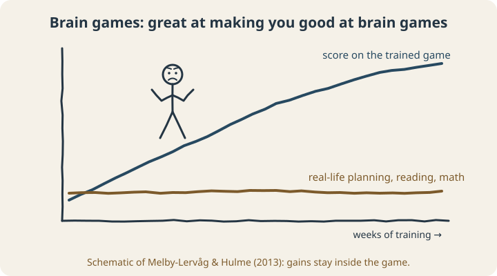
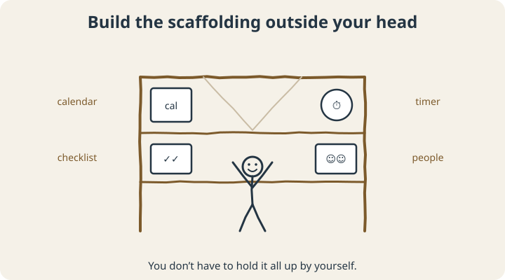

September 23, 2026
How to Improve Executive Function as an Adult (What Works, What Doesn’t)

If you’ve typed “how to improve executive function” into a search bar, you’ve probably been offered a brain-training app within about four seconds. Play these games for ten minutes a day, the ads say, and watch your focus, memory, and planning take off.
It’s an appealing idea. Your brain is a muscle, so train it. Unfortunately, that’s where the research gets awkward.
This post covers what the evidence says actually helps adults with executive function (the mental skills behind planning, starting, focusing, and following through), and what mostly doesn’t.
A quick refresher: what are we trying to improve?
Executive functions are the brain’s management skills. One of the most widely cited reviews describes three core ones: inhibition (stopping yourself and staying on task), working memory (holding information in mind while you use it), and cognitive flexibility (switching approaches when the first one fails). Planning, organizing, and time management are built on top of those.1 We cover this in more depth in What Is Executive Dysfunction?
The brain-training problem
Brain-training games mostly target working memory. So researchers have tested a very direct question: if you train working memory, does anything else get better?
A 2013 meta-analysis pooled 23 controlled studies of working memory training. The programs did produce short-term improvements in working memory. But when the researchers looked for effects on things people actually care about (reasoning, reading comprehension, arithmetic), they found no convincing evidence of improvement. The authors questioned whether these programs are useful for boosting everyday cognitive functioning in healthy adults.2

Researchers call this a failure of far transfer. You get better at the trained task and at tasks very similar to it, and the improvement doesn’t spread much further. If you enjoy the games, play them. Just don’t expect them to get your taxes filed.
What does help
1. Move your body (it helps right away)
A meta-analysis of 40 experiments found that a single session of moderate aerobic exercise produced small improvements in executive function tasks shortly afterward, in both speed and accuracy.3 The effects are modest, but they’re immediate, cheap, and come with plenty of other benefits.
Practical version: take a brisk ten-to-twenty-minute walk before the task you’ve been dreading, instead of saving it as a reward for afterward.
2. Protect sleep
A tired brain has less executive function to spend. If your planning and focus fall apart after short nights, that’s your answer about where to start. We laid out a practical sequence in When EF Support Starts With Sleep and Movement.
3. Plan in if-then statements
Vague intentions (“I’ll work on the report this week”) fall apart. Specific ones hold up much better: “When I sit down after lunch on Tuesday, then I’ll open the report and write the headings.” Across 94 tests, plans like this had a medium-to-large effect on actually reaching goals.4 They work because the decision is already made before the moment arrives, which is when willpower tends to be lowest.
4. Build the scaffolding outside your head
This one is the big one. Instead of trying to make your internal executive function stronger, move as much of the work as you can outside your head, where it doesn’t depend on remembering or feeling motivated.

- For working memory: one capture list for everything (not six), and checklists for any routine with more than three steps.
- For time: visible timers, alarms at transitions rather than deadlines, and estimates padded by 50%. (More on this in our time blindness post.)
- For inhibition: change the environment instead of relying on self-control. Put the phone in another room and block the distracting sites during work blocks.
- For starting: make the first step tiny, and set up the task the night before so it’s waiting for you.
Some people feel like this is cheating. Eyeglasses don’t make your eyes any stronger either, and nobody holds that against them.
5. Add people
Other people are some of the most effective external scaffolding there is. A friend to work alongside (see body doubling), someone to check in with, or a coach who helps you design and adjust your systems all carry part of the load. Coaching research is still young, but the early studies have been encouraging (we go through it in What Is ADHD Coaching?).
6. Talk to a doctor if the struggle is big or new
ADHD, depression, anxiety, sleep disorders, thyroid problems, and some medications can all affect executive function, and several of them respond well to treatment. If your executive function has changed noticeably, or has always been a major barrier, a proper evaluation is worth it.
Where to start
You probably can’t train your way to a new brain with an app. What you can do is give the brain you have a better setup: move before hard tasks, protect your sleep, decide your if-thens in advance, and build as much structure outside your head as you can. Most people won’t need all of that, so start with whichever piece fixes your biggest daily problem.
If you’re not sure which piece that is, the free Complete EF Profile combines four of our assessments into one picture of your planning, starting, regulation, and environment, so you can see where to begin.
Scope note: This article is educational. Our assessments are self-reflection tools, not diagnostic tests, and coaching isn’t a substitute for medical or psychological care.
Sources
- Diamond, A. (2013). Executive functions. Annual Review of Psychology, 64, 135–168. doi.org/10.1146/annurev-psych-113011-143750
- Melby-Lervåg, M., & Hulme, C. (2013). Is working memory training effective? A meta-analytic review. Developmental Psychology, 49(2), 270–291. doi.org/10.1037/a0028228
- Ludyga, S., Gerber, M., Brand, S., Holsboer-Trachsler, E., & Pühse, U. (2016). Acute effects of moderate aerobic exercise on specific aspects of executive function in different age and fitness groups: A meta-analysis. Psychophysiology, 53, 1611–1626. doi.org/10.1111/psyp.12736
- Gollwitzer, P. M., & Sheeran, P. (2006). Implementation intentions and goal achievement: A meta-analysis of effects and processes. Advances in Experimental Social Psychology, 38, 69–119. doi.org/10.1016/S0065-2601(06)38002-1